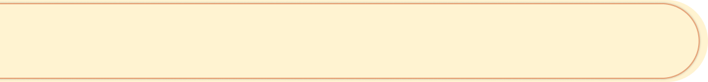

日本動物夜間探索營

一場與自然共眠的奇幻冒險！
走進日本靜謐的夜晚森林，揭開動物們夜間生活的神祕面紗。「日本動物夜間探索營」是一場結合自然教育、觀察體驗與野外探索的特色行程，讓你在專業導覽下，與夜行性動物不期而遇，感受大自然的脈動。


一場與自然共眠的奇幻冒險！
走進日本靜謐的夜晚森林，揭開動物們夜間生活的神祕面紗。「日本動物夜間探索營」是一場結合自然教育、觀察體驗與野外探索的特色行程，讓你在專業導覽下，與夜行性動物不期而遇，感受大自然的脈動。
由資深自然解說員帶隊，尋找日本特有的夜行性動物，如貉（たぬき）、飛鼠、貓頭鷹等。
學習辨識動物留下的足跡、糞便與棲息環境，提升野外觀察力。
品嚐營地特製便當與地方野菜料理，體驗地道風味。